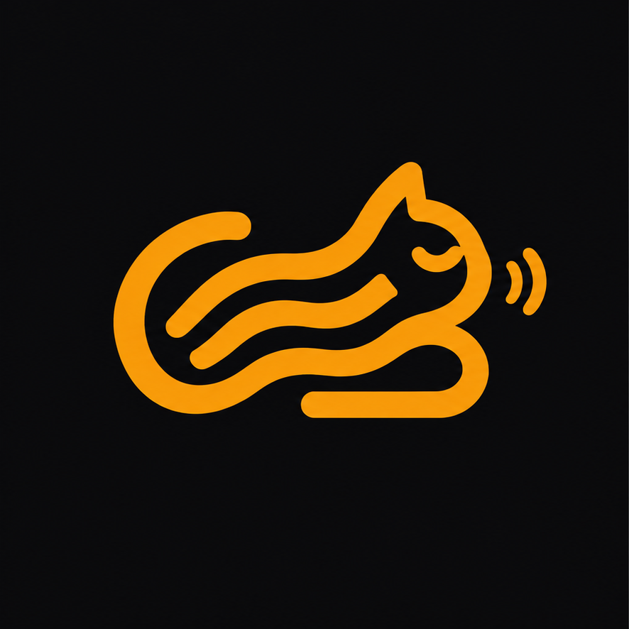

CaT is OpenSpec’s spec
format plus a system layer, for projects where the transpiler writes the code.
Specs are plain .md files in bacon/: frontmatter,
headings, tables, fenced code. Requirements use
BCP 14 keywords in
EARS-shaped sentences, each with
scenarios that become tests.
---
feature: Authentication
using: [Supabase Auth]
---
## Purpose
Users sign up with email or Google.
## Requirements
### Requirement: Password length
Passwords MUST be at least 10 characters.
#### Scenario: Too short
- **WHEN** a visitor submits a 9-character password
- **THEN** sign-up is rejectedSpec-driven tools today either throw the spec away after generation or keep it next to hand-written code. CaT is the third option: the spec is the only thing humans edit, and the code is regenerated from it.
Humans edit bacon/*.md. src/ is written by the transpiler, committed, and never edited by hand. A fix is a spec change.
Markdown, YAML frontmatter, BCP 14, EARS and the OpenSpec requirement grammar are used as they are. CaT adds only the system layer.
Every #### Scenario: is one generated test. The spec is the test plan.
Author locally with any agent. Push bacon/; CI runs the headless transpile and commits src/. No vendor IDE.
One document, five levels of authority. Higher levels override lower ones.
stack:, using:, references:Specificity hierarchy: verbatim block > requirement > Flow / View / Model > prose > transpiler discretion.
Every term on this page is defined once in GLOSSARY.md. The language itself is SPEC.md. Design rationale lives in docs/design.md.
A CaT feature file with the CaT-only parts removed is a valid OpenSpec
spec.md. The CLI test suite proves it against the real
openspec validate.
| Tier | What | From |
|---|---|---|
| Used unchanged | CommonMark + GFM tables, YAML frontmatter, BCP 14 (RFC 2119 + RFC 8174), OpenSpec’s ## Purpose / ## Requirements / ### Requirement: / #### Scenario: grammar |
CommonMark, BCP 14, OpenSpec |
| Guidance | EARS templates for requirement bodies: WHEN, WHILE, IF…THEN, WHERE, plain. Plus the regression form WHEN x, the system MUST CONTINUE TO y |
EARS, Kiro |
| CaT’s own | stack:, feature:, using:, references: frontmatter; ## Model:, ## Flow:, ## View: sections; verbatim blocks; the purr transpile record |
SPEC.md |
| References | Designs, design tokens, API descriptions and documents are pointed at, never re-described. kind: design-tokens is W3C DTCG, kind: api is OpenAPI, GraphQL or AsyncAPI, kind: schema is JSON Schema |
DTCG, OpenAPI, JSON Schema |
Martin Fowler’s taxonomy: spec-first tools generate once and discard the spec (Kiro, GitHub Spec Kit); spec-anchored tools keep the spec and update it alongside code (OpenSpec); spec-as-source tools regenerate code from the spec (Tessl, CaT). CaT takes OpenSpec’s grammar, Tessl’s DO NOT EDIT output marker, Kiro’s CONTINUE TO regression form, and adds the system layer: stack, providers, Models, Flows, Views, references.
Plain .md files. Frontmatter for the fields that need a closed
vocabulary. Headings for sections that map to generated artifacts. GFM tables
for Models. OpenSpec headings for requirements and scenarios. Fenced code for
anything verbatim. Any other heading is informative prose, never an error.
my-project/
├── cat.config.yaml # transpiler settings, provider profiles, references (human-owned)
├── bacon/ # the spec (human-owned)
│ ├── system.md # required: name, stack, system-wide requirements
│ ├── models.md # Models shared by more than one feature
│ ├── auth.md # feature file
│ ├── features/*.md # feature files, same format
│ └── refs/ # snapshots of references
├── purr # transpile record (transpiler-owned)
└── src/ # output (transpiler-owned)
Ownership is normative. Humans, with an agent running cat-author,
change human-owned paths. Only cat-transpile changes
transpiler-owned paths, and it never modifies bacon/. Both are
committed: incremental runs need the previous output as a baseline, and the
purr diff is the review record.
| Field | Where | Meaning |
|---|---|---|
name | system file | Name of the system |
stack | system file | Map of framework, language, database, auth, styling, deploy |
feature | feature files | Human name of the feature, unique across the project |
using | feature files | Provider binding. The transpiler MUST use these providers and MUST NOT substitute others |
references | any spec file | Reference binding. Names declared under references: in cat.config.yaml |
---
name: TaskFlow
stack:
framework: Next.js (App Router)
language: TypeScript
database: Supabase
auth: Supabase Auth
styling: Tailwind + shadcn/ui
deploy: Vercel
---Unknown fields are allowed and passed to the transpiler as hints.
## Requirements, ### Requirement:, #### Scenario:
OpenSpec grammar, used unchanged. A requirement name is its identity: unique
within the file, case-sensitive, used in test names and purr.
The body is one to three sentences with an uppercase BCP 14 keyword, EARS-shaped.
Every requirement SHOULD have at least one scenario; a scenario MUST have a THEN.
## Requirements
### Requirement: Account lockout
IF sign-in fails three times within 10 minutes, THEN the system MUST lock
the account for 15 minutes.
#### Scenario: Third failure locks
- **GIVEN** an account with 2 failed attempts in the last 10 minutes
- **WHEN** a third attempt fails
- **THEN** the account is locked for 15 minutes
- **AND** further attempts are rejected without checking the password| Keyword | Transpiler obligation |
|---|---|
| MUST, MUST NOT, SHALL, REQUIRED | Implement without exception. Enforce with a test, constraint or policy. Cannot satisfy it: fail the run and name the requirement. |
| SHOULD, SHOULD NOT, RECOMMENDED | Implement by default. Deviate only for a concrete reason, recorded in purr.decisions. |
| MAY, OPTIONAL | Implement if cheap and consistent, otherwise skip. |
EARS shapes: WHEN <trigger>, the system MUST … ·
WHILE <state>, … · IF <condition>, THEN … ·
WHERE <feature is present>, … · plain <subject> MUST … ·
regression WHEN x, the system MUST CONTINUE TO y.
Inline requirements: a sentence with an uppercase keyword anywhere
else in the file (Invariants, Flow or View prose) is still normative. It has no
name and no scenario, so no test. Library choices like “drag-and-drop MUST
use @hello-pangea/dnd” go there, not under ## Requirements,
which stays behaviour-only and OpenSpec-valid.
## Model: and Invariants:
A Model heading followed by a GFM table. A reference field is the other Model’s
name, the way TypeScript or Prisma would write it; append [] for a list.
An enum is a comma list in the Type column. Models used by more than one feature go in
models.md.
## Model: Task
| Field | Type | Notes |
|---|---|---|
| id | uuid | primary key |
| title | text | |
| assignee | Profile | |
| status | todo, in_progress, done | |
| priority | low, medium, high, urgent | default medium |
| due_date | date | nullable |
| created_at | timestamp | auto |
Invariants:
- The assignee MUST belong to the same team as created_by.Types: text integer decimal boolean date
timestamp (UTC, ISO 8601) uuid email url json
currency (minor units + ISO 4217), an enum, or a Model name.
Notes vocabulary: primary key nullable unique
auto min N max N default V renamed from F
(emits a rename migration). Anything else is read as prose.
## Flow: and ## View:A Flow is numbered steps: the happy path. Conditions and failure handling are prose after the list. A View is prose describing a page or component, with no sequential logic.
## Flow: Assign Task
1. User picks a team member from a dropdown
2. System updates the assignee
3. System notifies the new assignee
## View: Dashboard
Show tasks grouped by status in a kanban board. User can filter by assignee
and priority. Overdue tasks are highlighted with the `color.overdue` token.
The kanban board's drag-and-drop MUST use @hello-pangea/dnd.Say “if sending fails”, not “if step 2 fails”. Step numbers move.
Any fenced code block outside a Model table is copied into the output unchanged. The language tag and the surrounding prose say where it goes.
Validate the session server-side before rendering a protected page:
```typescript
const { data: { session } } = await supabase.auth.getSession()
if (!session) redirect('/login')
```
A reference is declared once in cat.config.yaml and bound from a spec
file with references:. A Markdown link is informative; a bound reference
is normative, and its kind says what the transpiler owes it.
references:
design-tokens:
kind: design-tokens # W3C DTCG json; theme is generated from it
uri: bacon/refs/tokens.json
dashboard-design:
kind: design
uri: https://www.figma.com/design/AbC123/TaskFlow?node-id=12-34
via: mcp:figma # cat-author reads it here
snapshot: bacon/refs/dashboard/ # cat-transpile reads only this| kind | Transpiler obligation |
|---|---|
design | Match layout, copy and component structure in the snapshot |
design-tokens | Generate the theme from the tokens. MUST NOT hardcode a value that exists as a token |
api | Generate clients and types. MUST NOT invent an endpoint or field the description lacks |
schema | Same, for JSON Schema data shapes |
doc | Context, informative unless a requirement names it |
MCP at author time, files at transpile time. The transpile run is
headless and offline. A remote reference MUST have a snapshot under
bacon/refs/, written by cat-author and committed.
cat.config.yamlversion: 0.2 # CaT language version
transpiler:
model: claude-sonnet-4 # LLM id. The one place "model" means the LLM
strategy: incremental # or full
output: src/
retries: 2 # self-correction attempts on build failure
providers:
supabase-auth:
name: Supabase Auth # matched by `using:`
package: "@supabase/supabase-js"
env: [NEXT_PUBLIC_SUPABASE_URL, NEXT_PUBLIC_SUPABASE_ANON_KEY]Provider profile fields other than name are hints, read as prose.
catspec validate is deterministic. --strict turns every warning into a failure, matching OpenSpec.
| Code | Condition |
|---|---|
E_NO_SYSTEM, E_NO_NAME_DECL, E_MISSING_STACK, E_INVALID_CONFIG | Project shape |
E_DUPLICATE_MODEL, E_DUPLICATE_FEATURE, E_UNRESOLVED_REF, E_EMPTY_FLOW | Names and structure |
E_DUPLICATE_REQ, E_REQ_NO_BODY, E_SCENARIO_OUTSIDE_REQ, E_SCENARIO_NO_THEN | Requirement grammar |
E_UNKNOWN_REFERENCE, E_REFERENCE_KIND | Reference bindings |
W_NO_PURPOSE, W_REQ_NO_KEYWORD, W_REQ_NO_SCENARIO, W_REQ_NOT_EARS, W_REQ_LONG | Requirement quality |
W_NO_FIELD_TYPE, W_NO_PRIMARY_KEY, W_SPARSE_FEATURE, W_NO_PROVIDER_PROFILE, W_CROSS_FEATURE_MODEL | Model and feature hygiene |
W_REFERENCE_MISSING, W_REFERENCE_NO_SNAPSHOT | Reference files |
Full conditions in SPEC.md §10.
Authoring is interactive and local. Transpiling is headless and runs in CI. Two skills, one for each.
Both skills, via catspec validate. Deterministic. Writes nothing.
cat-author. Asks what is unclear, writes the answers into bacon/. The spec diff is the plan.
cat-author. The human approves the diff and commits human-owned paths.
cat-transpile. Never asks, never edits bacon/. Writes src/ and purr. Decisions and open questions go to purr.decisions.
GENERATED FROM bacon/<file> BY CaT - DO NOT EDIT.<feature> / <requirement> / <scenario>.transpiler.retries times, then fail the run.
The transpile record at the project root. Incremental runs diff bacon/
against last_transpiled_commit, expand through dependencies and
references, and regenerate only those outputs.
last_transpiled_commit: a3f7c2e
last_transpiled_at: 2026-10-14T10:30:00Z
dependencies: # Model -> spec files that reference it
Team: [bacon/auth.md, bacon/features/tasks.md]
decisions:
- spec: bacon/auth.md
requirement: Session length
kind: should_deviation # should_deviation | may_skipped | ambiguity
reason: "Supabase default is 1h; set JWT expiry to 7d via project config"
bacon/auth.md:
content_hash: a1b2c3d4
outputs:
- src/app/(auth)/login/page.tsx
- src/lib/auth.ts
Four spec files. Fourteen named requirements, every one with scenarios.
Validates with --strict and zero warnings. Full source in
rleroi/catspec-example.
---
name: TaskFlow
stack:
framework: Next.js (App Router)
language: TypeScript
database: Supabase
auth: Supabase Auth
styling: Tailwind + shadcn/ui
deploy: Vercel
---
## Purpose
A simple task management app for small teams. Create projects, assign
tasks, track progress.
## Requirements
### Requirement: Team scoping
WHEN a user queries any table, the system MUST return only rows that belong
to that user's team.
#### Scenario: Member of another team
- **GIVEN** a user in Team A
- **WHEN** they request a Task that belongs to Team B
- **THEN** the response contains no Task
- **AND** the status code is 404
### Requirement: Unauthenticated requests
IF a request carries no valid session, THEN the system MUST respond with
401 and MUST NOT reveal whether the resource exists.
#### Scenario: Protected route without session
- **WHEN** a visitor with no session opens /dashboard
- **THEN** they are redirected to /login
- **AND** no data is rendered---
feature: Authentication
using: [Supabase Auth]
---
## Purpose
Users sign up with email or Google OAuth. A Profile is created on first
login. Profile is shared with other features, see `bacon/models.md`.
## Requirements
### Requirement: Verification email
WHEN a user completes email sign-up, the system MUST send a verification
email.
#### Scenario: Email sign-up
- **WHEN** a visitor signs up with email and password
- **THEN** a verification email is sent to that address
- **AND** the account is not usable until verified
#### Scenario: Google sign-up
- **WHEN** a visitor signs up with Google
- **THEN** no verification email is sent
### Requirement: Session length
Sessions SHOULD last 7 days.
#### Scenario: Return within a week
- **GIVEN** a user who signed in 6 days ago
- **WHEN** they open the app
- **THEN** they are still signed in
## Flow: Sign Up
1. User enters email and password, or clicks "Sign in with Google"
2. System creates the auth account
3. System sends a verification email (email sign-up only)
4. On first login, system creates a Profile row---
feature: Task Management
using: [Supabase]
references: [design-tokens]
---
## Model: Notification
| Field | Type | Notes |
|---|---|---|
| id | uuid | primary key |
| user | Profile | recipient |
| message | text | |
| read | boolean | default false |
| task | Task | nullable |
| created_at | timestamp | auto |
Invariants:
- A user MUST only read notifications where user is themselves.
## Requirements
### Requirement: Assignment notification
WHEN a task's assignee changes, the system MUST create a Notification for
the new assignee that references the task.
#### Scenario: Reassignment
- **GIVEN** a task assigned to alice
- **WHEN** it is reassigned to bob
- **THEN** one new Notification exists for bob referencing the task
#### Scenario: Reassignment to the same person
- **GIVEN** a task assigned to alice
- **WHEN** it is reassigned to alice
- **THEN** no new Notification is created
### Requirement: Overdue highlight
WHILE a task's due_date is in the past and its status is not `done`, the
dashboard MUST render it with a red highlight.
#### Scenario: Overdue but done
- **GIVEN** a task due yesterday with status `done`
- **WHEN** the dashboard renders
- **THEN** that task card has no overdue highlight
## View: Dashboard
Show tasks grouped by status in a kanban board. User can filter by assignee
and priority. Overdue tasks are highlighted with the `color.overdue` token.
The kanban board's drag-and-drop MUST use @hello-pangea/dnd.
CaT ships as three agent skills and a CLI. Any agent that can load a
SKILL.md works: Cursor, Claude Code, and others.
# 1. Scaffold. The cat-init skill creates cat.config.yaml, bacon/system.md,
# the CI workflow, .gitattributes and CODEOWNERS.
skills/cat-init/SKILL.md
# 2. Author. Interactive. Validate, enrich, confirm, commit bacon/.
skills/cat-author/SKILL.md
# 3. Validate anywhere.
npx -y @catspec/cli validate . --strict
# 4. Transpile. Headless, in CI or locally. Writes src/ and purr only.
skills/cat-transpile/SKILL.md
catspec transpile .cat-init, cat-author, cat-transpilecatspec validate | verify | diff | transpile, lint-rule tests, OpenSpec conformance testvalidate --strictcatspec verify — fails when a human commit touched src/ or purrtranspiler.agent: cursor, cursor-cli, claude-codesrc/. The kill criterion.cat-hq/cat-transpile@v1npx skills add cat-hq/catspeckind: code for brownfield, kind: spec for cross-repo